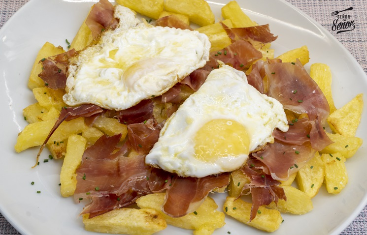

Huevos Rotos con Jamón

Ingredients:
- 4 eggs
- 200g of jamón serrano (Spanish cured ham)
- 4 medium potatoes
- Olive oil
- Salt
Instructions:
- Peel and cut the potatoes into thin slices.
- Heat olive oil in a frying pan and fry the potatoes until golden and crispy. Remove and drain on paper towels.
- In the same pan, fry the eggs sunny side up.
- Slice the jamón serrano into thin strips.
- To serve, place the fried potatoes on a plate, top with the fried eggs, and sprinkle the jamón serrano over the top. Season with salt to taste.
Back to Home